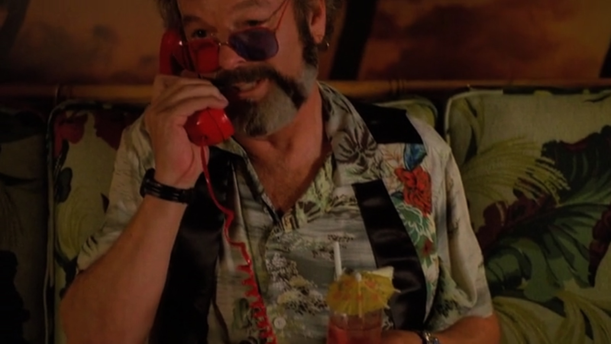

Dr. Jacoby's Zombie

Description
"It's like a... like a dream..."
Ingredients
- 1 ounce light rum
- 1 ounce gold rum
- 1 ounce unsweetened pineapple juice
- 1 ounce freshly squeezed lemon juice, from 1/2 lemon
- 1 ounce freshly squeezed lime juice, from 1 large lime
- 1 ounce passion fruit syrup
- 1/2 ounce simple syrup
- 1 dash aromatic bitters
- 1 ounce 151-proof dark rum
- Fresh mint sprig, for garnish
- 1 paper umbrella
Directions
- Gather all ingredients.
- In a cocktail shaker, pour the light and dark rums, pineapple and citrus juices, passion fruit syrup, simple syrup, and bitters. Add the high-proof rum now, or reserve it for a float. Fill the shaker with ice.
- Shake well.
- Strain into a tall glass filled with fresh ice.
- Optionally, float the high-proof rum on top of the drink by slowly pouring it over the back of a bar spoon.
- Garnish with a sprig of fresh mint. Add paper umbrella.